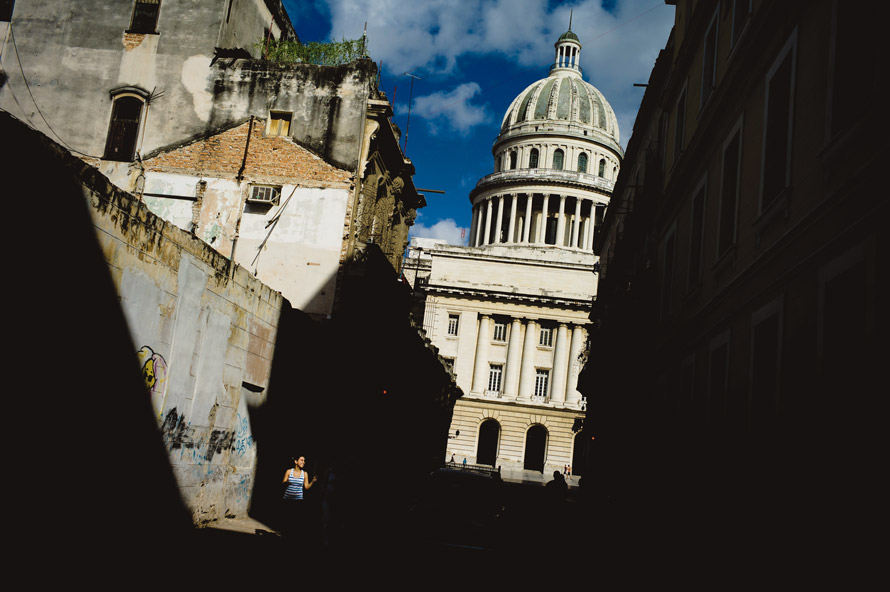
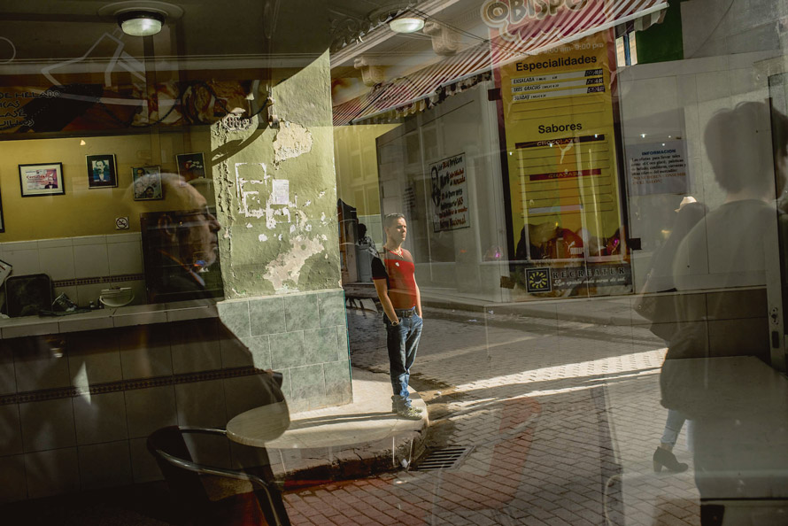

Étonnante usine à cerveaux
Des magasins parfois vides, mais des laboratoires pleins. À Cuba, la recherche publique demeure une priorité politique. Au cœur des difficultés économiques, l’île a choisi d’investir massivement dans la formation scientifique et médicale. Cette politique produit aujourd’hui un réseau de centres réputés à travers le monde, malgré l’embargo et la pénurie chronique d’équipements.

La Havane abrite aujourd’hui plusieurs dizaines de centres de recherche en biotechnologie, pharmacologie ou robotique médicale. L’État, via l’Institut central de planification, identifie les secteurs prioritaires et oriente les financements. Dès la crèche, les enfants sont initiés aux sciences et bénéficient de parcours d’excellence jusqu’à l’université.
« Nous ne sommes pas riches, mais nous avons investi dans l’intelligence », explique Ana María González, chercheuse en biologie moléculaire. « C’est un choix politique majeur de la révolution, poursuivi malgré les crises. »
« La culture du soin est au cœur de nos institutions : financer les laboratoires, c’est prolonger la révolution. »
Les laboratoires exportent leurs médicaments vers l’Amérique latine et coopèrent avec des universités européennes. Les étudiants étrangers, eux, s’engagent à exercer quelques années dans le système de santé cubain. Les tournées médicales sont devenues une vitrine de la coopération internationale de l’île.

William Valdés, directeur du laboratoire national de biotechnologie, reste lucide : « Le financement repose entièrement sur le budget public. Chaque rupture d’approvisionnement peut déstabiliser nos programmes. » Pourtant, la coopération scientifique s’élargit, notamment avec l’Amérique latine.
Malgré l’embargo, les chercheurs cubains publient dans les revues internationales. Ils multiplient les projets conjoints avec des universités européennes et asiatiques pour moderniser leurs infrastructures et partager leurs découvertes.